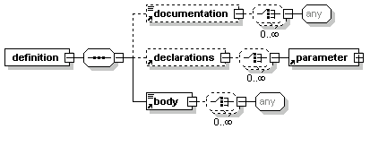

You define DCI templates with the template:definition element. In the template you specify a set of parameters inside a template:declarations element.

The examples that follow starts with the template:definition element, which must contain the relevant namespace declarations including one for the template: prefix.
<template:definition xmlns="http://www.w3.org/2002/06/xhtml2"
xmlns:template="http://www.volantis.com/xmlns/marlin-template">
<template:documentation> </template:documentation>
<template:declarations>
<template:parameter name="title" type="simple"/>
<template:parameter name="content" type="complex"/>
</template:declarations>
<template:body>
<h2>
<template:value ref="title"/>
</h2>
<div>
<template:value ref="content"/>
</div>
<div>
<p>Copyright <a href="#">Jive Sports</a></p>
</div>
</template:body>
</template:definition>
Our example takes two parameters using the template:parameter element. The first one defines the title of a page. The 'simple' type of a parameter allows character data only. Second parameter defines the variable page content. The 'complex' type means it may contain character data and XDIME markup. These parameter values are referenced in the template:value elements in the template body. Both the name and type attributes are required.
These parameter values can be bound in the body of any document that uses this template to generate a page. See Applying templates for more information.
<template:declarations> <template:parameter name="title" type="simple"/> <template:parameter name="content" type="complex"/> </template:declarations>
The use and default attributes on parameters are interdependent.
You can set a default value for a parameter in the default attribute. If you do so, the use attribute setting must be 'optional'. Conversely, if a parameter is required (which is the default behavior), it is invalid to also define a value in the default attribute; an error will occur if an author does not provide a value.
It is often convenient to express default values in the body of a contained template:simpleValue or template:complexValue element, rather than using attribute values.
You can refer to multiple templates within the body of a template definition, but you can't define other templates in the body.
The example template:body element defines the structure of a client framework page in an open content model. The div elements specify the main sections, with the template:value elements referring to the title and content parameters in the ref attribute.
<template:body>
<h2>
<template:value ref="title"/>
</h2>
<div>
<template:value ref="content"/>
</div>
<div>
<p>Copyright <a href="#">Jive Sports</a></p>
</div>
</template:body>
You should document templates so that authors can make good use of them. The template:documentation element has an open content model.
Related topics
About templates
Applying templates